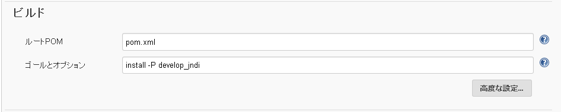
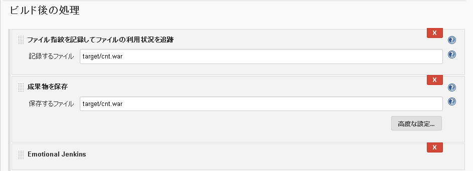
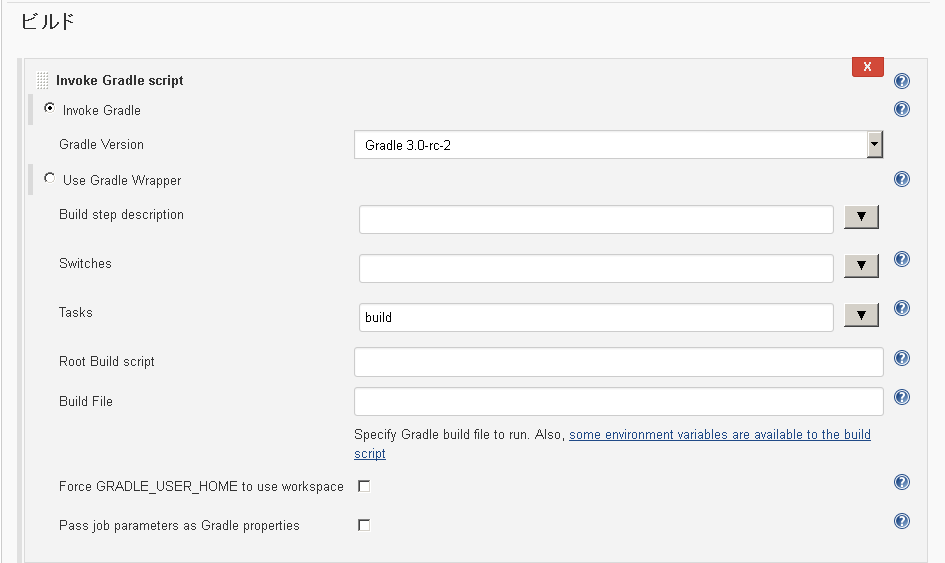
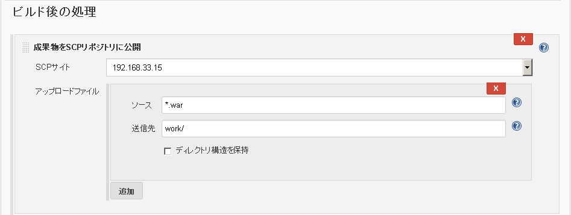

jenkinsジョブ設定
MavenプロジェクトBuild
新規ジョブ作成
ジョブ名を入力して「Mavenプロジェクトのビルド」を選択
ソースコード管理
対象のソース管理ツール設定を定義
ビルド  ゴールとオプションには対象のMavenコマンドとオプションを指定
ビルド後の処理
warファイルを保管する 
GradleプロジェクトBuild
新規ジョブ作成
ジョブ名を入力して「フリースタイルプロジェクトのビルド」を選択
ソースコード管理
対象のソース管理ツール設定を定義
ビルド
invoke Gradle scriptを選択  Tasksに対象のGradleコマンドとオプションを指定
ビルド後の処理
warファイルを保管する
warファイル転送
新規ジョブ作成
ジョブ名を入力して「フリースタイルプロジェクトのビルド」を選択
ビルド
ビルド手順の追加で「他プロジェクトから成果物をコピー」を選択
 「他プロジェクトから成果物をコピー」は「Copy Artifact Plugin」適用で利用可能となる
「他プロジェクトから成果物をコピー」は「Copy Artifact Plugin」適用で利用可能となるビルド後の処理
ビルド後の処理の追加で「成果物をSCPリポジトリに公開」を選択  「成果物をSCPリポジトリに公開」は「Hudson SCP publisher plugin」適用で利用可能となる
デフロイ
新規ジョブ作成
ジョブ名を入力して「フリースタイルプロジェクトのビルド」を選択
ビルド
ビルド手順の追加で「シェルの実行」を選択
// サービス停止 sudo service tomcat stop// warファイルコピー sudo cp -f /home/jenkins/work/XXX.war /home/nepios/bin/apache-tomcat-8.0.32/webapps// サービス起動 sudo service tomcat start